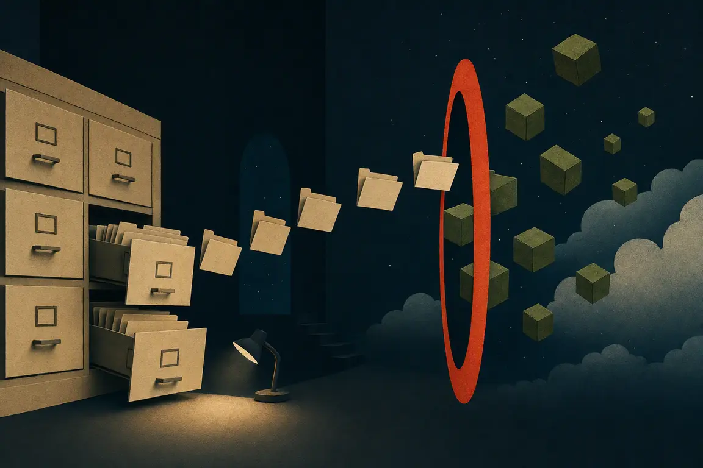

A local object room
Your filesystem,
speaking S3.
One small dev server. Real files on disk. A browser console when you need to see what your app just uploaded.
- Storage
- Plain files
- Console
- Built in
- Telemetry
- None

The whole idea
No proprietary volume to decode.
Stop the server and your data is still exactly where you put it. Buckets are folders. Keys are paths. Metadata and tags stay in quiet sidecars.
./data/assets/avatars/ada.webps3://assets/avatars/ada.webpThe catalog desk
Inspect the upload before your next line of code.
Browse buckets, upload or download objects, inspect sizes and types, and remove test data. The actual console is available at /ui from your locally running server. This public site is a static tour, not an S3 endpoint.
assets
./data/assets/Enough S3 for the dev loop
The parts your app actually touches.
- 01Core objects
Put, get, head, delete, ListObjectsV2, buckets, byte ranges.
- 02Realistic flows
Multipart uploads, presigned GET/PUT, metadata and object tags.
- 03App edges
CORS, fixture seeding, and object-created/removed webhooks.
Deliberately not production-ready. No IAM, versioning, replication, or durability theatre—just a fast, legible local loop.
From zero to a bucket
One binary. One directory.
Build from source today. Release binaries and the container image will follow the same interface.
$ cargo install --path .
$ s3dir serve ./data --port 9000
s3dir ready http://127.0.0.1:9000
console http://127.0.0.1:9000/ui
directory ./data